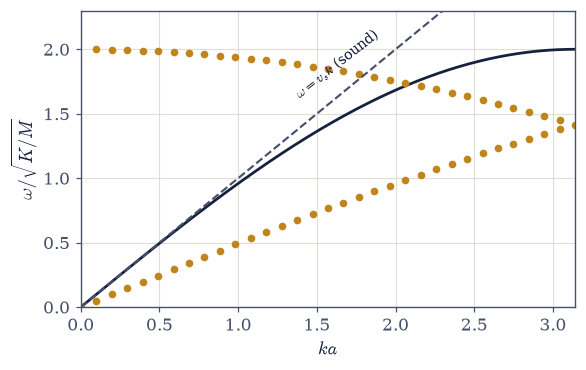
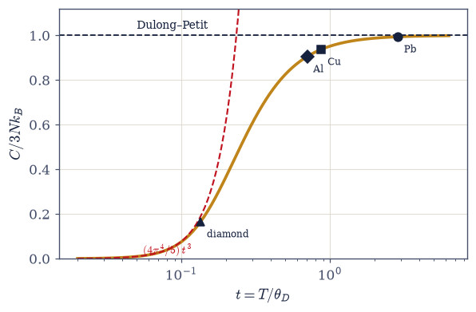
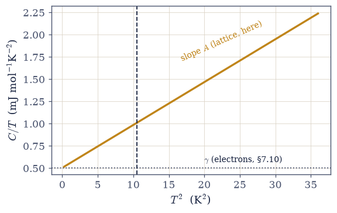
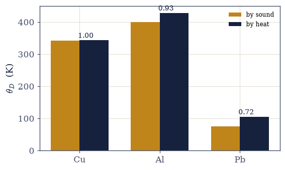
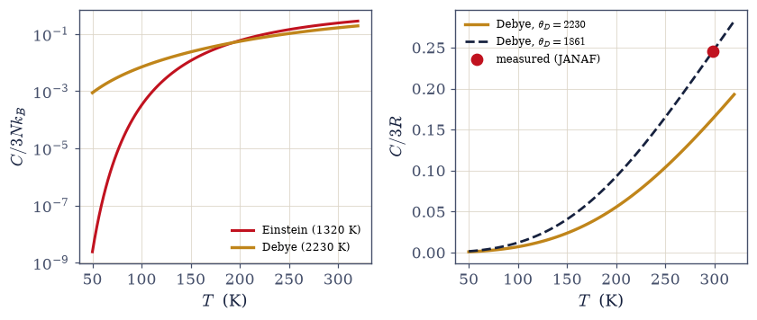
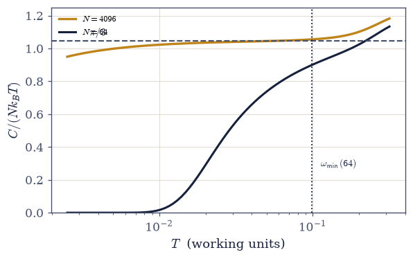

7.16 Phonons and the Debye Model#
Notebook overview#
Three promises come due in this notebook, and all three are kept in sound. The confession of §7.5 (the Einstein solid collapsing exponentially at 50 K where diamond’s measured heat capacity falls only as \(T^3\)) is resolved. The coefficient \(A = 12\pi^4R/5\theta_D^3\) that §7.10 invoked on trust for its \(C/T\)-versus-\(T^2\) plot is derived here and evaluated for copper’s \(\theta_D = 343\) K: it returns \(0.0482\) mJ mol⁻¹K⁻⁴, the exact figure §7.10 displayed, and the crossover \(T^* = 3.2\) K of that notebook now stands fully first-principles. And Volume V’s Dulong–Petit law, asserted there as equipartition, is recovered as a high-temperature limit of an exact quantum expression.
The mechanics comes first, and it is a reunion: the dynamical matrix of an \(N\)-atom ring of
masses and springs is the same circulant matrix that hopped electrons in the tight-binding chain of §7.12: one matrix, two physics; electrons hop, atoms sway. numpy.linalg.eigh returns the
dispersion \(\omega(k) = 2\sqrt{K/M}\,|\sin(ka/2)|\) at machine precision, sound emerges as the
small-\(k\) slope, and the structural point stands against §7.14: the photon gas had infinitely
many modes and needed \(\hbar\) to tame them, while a crystal has exactly \(3N\) and cannot suffer a catastrophe: its ultraviolet cutoff is not a hypothesis but a census. Each mode is
then the oscillator of §7.5 with \(\mu = 0\) by the unconserved-number argument of §7.14, and the reason
Einstein failed becomes physical before any integral: his solid, all modes at one frequency,
has nothing soft to offer at low temperature, while a real chain’s acoustic branch offers modes at every softness: the modes with \(\hbar\omega \lesssim k_BT\) are awake, their count
grows as \(T^d\), and each carries \(\sim k_BT\). Debye’s model is that census with its constant
computed: linear dispersion cut off at \(\omega_D\), the universal curve
\(C/3Nk_B = 3t^3\int_0^{1/t}x^4e^x/(e^x-1)^2\,dx\) (nondimensionalized per the standing
rule of §7.14), Dulong–Petit above, \((4\pi^4/5)\,t^3\) below: the integral of §7.3 in its third starring role.
The data jewel is an over-determination: \(\theta_D\) can be measured with a calorimeter, through \(C(T)\) — or with a loudspeaker, through the sound speeds and the atom density, two experiments that share no apparatus. Copper agrees with itself to three digits (342 K by sound, 343 K by heat); aluminum comes in at ratio 0.93; lead at 0.72. The misses are taught, not hidden: lead is soft, heavy, and anharmonic, its springs barely Hookean at accessible temperatures. Diamond is then closed honestly at both ends: Debye with the low-\(T\) \(\theta_D = 2230\) K owns the regime where Einstein collapses (the ratio of the two models falls from 1.5 to 0.002 between 300 and 75 K), yet undershoots the measured 300 K heat capacity, because the true phonon spectrum is not a parabola with a cliff, so the fitted \(\theta_D\) drifts with the fitting window, and that drift is itself data. A student exercise proves that dimension counts (the exact 1D chain’s \(C/T\) plateaus at exactly \(\pi/3\)) and meets the finite-size freeze on the way: a 64-atom chain goes silent below its softest mode.
Conventions (this notebook). The chain runs in working units \(K = M = a = 1\) (so \(\omega(k) = 2|\sin(k/2)|\), \(v_s = 1\), \(k_B = \hbar = 1\)); the material data run in SI with cited inputs. The reduced temperature is \(t = T/\theta_D\); heat capacities are per mode (\(C/3Nk_B\) for crystals, \(C/Nk_B\) for the chain) except where a molar unit is stated. The \(k = 0\) translation mode is a free coordinate, not an oscillator, and is excluded from every thermal sum. Frequencies from
numpy.linalg.eighpass throughnumpy.sqrt(numpy.maximum(w2, 0))— the zero-mode round-off trap, demonstrated before it is clamped. The Debye integral is evaluated byscipy.integrate.quadon the nondimensional kernel only (the rule of §7.14), withnumpy.expm1and a stated lower cutoff.How to read the checks. Each exercise closes with a
validatecall against an independent fact: theeighspectrum against the closed-form dispersion at \(10^{-12}\); the census estimate against the measured mode count; both Debye limits against their stated values; the \(A\) coefficient against the digit §7.10 displayed; copper’s acoustic \(\theta_D\) against the calorimetric one; diamond’s model ratios against the cited anchors; the chain’s \(C/T\) against \(\pi/3\). A ✓ is strong evidence; a ✗ is a prompt to locate the discrepancy.Scope. Real phonon spectra (neutron and X-ray spectroscopy), anharmonicity and thermal expansion, phonon transport, graphene’s flexural modes, and nanoparticle calorimetry are named horizons. See Debye 1912; Einstein 1907 (the story completed here); Ashcroft & Mermin (Chs. 22–23); Kittel (Ch. 5). Cross-reference §7.5 (the oscillator; the confession), §7.10 (the coefficient, now derived), §7.12 (the circulant matrix and the counting), §7.14 (\(\mu = 0\); the nondimensionalization rule; the catastrophe contrast), §7.3 (\(\pi^4/15\), third use), §5.5 (Dulong–Petit as equipartition), and forward to §7.17 (BEC, where the boson number is conserved and the ceiling bites).
Theory in brief#
The chain, diagonalized — one matrix, two physics#
\(N\) atoms of mass \(M\) on a ring, nearest neighbours coupled by springs \(K\): Newton gives \(M\ddot u_n = K(u_{n+1} - 2u_n + u_{n-1})\), so normal modes solve the eigenproblem of the dynamical matrix
with \(S\) the one-site shift. This is, to the letter, the tight-binding circulant of §7.12. One matrix, two physics: electrons hop through it, atoms sway by it. Two facts carry the notebook. First, at small \(k\) the dispersion is linear: sound, with speed \(v_s\). Second, the ring has exactly \(N\) modes (a 3D crystal, \(3N\)). Say it against §7.14: the photon gas owned infinitely many modes and diverged classically; a crystal cannot: its ultraviolet cutoff is a census, not a hypothesis, and Debye’s \(\omega_D\) below is bookkeeping, not an ansatz.
Quantization, and what a phonon is#
Each normal mode is the harmonic oscillator of §7.5 (literally, in the mode coordinates), so its thermal energy is
The honest sentence about what a phonon is: a bookkeeping quantum of collective lattice motion — not a particle sitting anywhere, but as real as anything that scatters neutrons, which it does (the outward breath: inelastic neutron spectroscopy). The zero-point sum is \((9/8)Nk_B\theta_D\) in the Debye model: real, and visible in isotope effects.
Why Einstein failed: the census argument#
The confession of §7.5, recalled with its number: Einstein’s all-modes-at-\(\omega_E\) solid predicts \(C \sim e^{-\theta_E/T}\), which for diamond at 50 K is \(\sim 10^{-9}\) of the classical value, while the measurement falls only as \(T^3\). The resolution is physical before it is integral:
An acoustic branch offers modes at every softness. At temperature \(T\) the modes with \(\hbar\omega \lesssim k_BT\) are awake and each holds \(\sim k_BT\); in \(d\) dimensions their count grows as \((T/\theta)^d\). That is the notebook’s actual content; Debye’s integral is this census with its constant computed. Einstein’s solid fails because it has nothing soft to offer: below \(\theta_E\) its one frequency freezes and the whole solid goes silent at once.
The Debye model#
Keep exactly the low-\(\omega\) physics — linear dispersion with the three acoustic polarizations averaged as \(v_D = [3/(v_L^{-3} + 2v_T^{-3})]^{1/3}\) — and cut off where the census says to stop:
The integral is nondimensionalized per the standing rule of §7.14, with numpy.expm1 in the kernel.
Both limits close old accounts: at \(t \gg 1\) the curve reaches \(0.998\) at \(t = 5\) (Dulong–Petit, Volume V’s \(3Nk_B\) now a limit rather than an assumption), and at
\(t \ll 1\) it lands on \((4\pi^4/5)\,t^3\) at ratio 1.00000 by \(t = 0.02\), since
\(\int_0^\infty x^4e^x/(e^x-1)^2dx = 4\pi^4/15\): the Bose integral of §7.3, in its third starring
role.
The coefficient 7.10 used, derived#
Keep only the \(t \ll 1\) limit of the Debye curve, the \((4\pi^4/5)\,t^3\) law just verified, and restate it per mole (\(Nk_B \to R\)); the low-temperature coefficient follows with no free parameter:
the exact figure §7.10 invoked for its \(C/T\)-versus-\(T^2\) plot with the derivation deferred to this notebook. The cross-reference closes in public: the coefficient invoked six notebooks ago and the coefficient derived today agree to the displayed digit, and the crossover of §7.10 \(T^* = \sqrt{\gamma/A} = 3.2\) K now stands fully derived.
Two experiments, one number#
The census fixes \(\omega_D^3 = 6\pi^2 n\,v_D^3\), so \(k_B\theta_D = \hbar\omega_D\) is computable from sound speeds and atom density with no calorimeter in sight; the same number must independently emerge from fitting the measured \(C(T)\):
\(\theta_D\) is over-determined: calorimetry fixes it through the heat capacity, but acoustics fixes it through \(v_L\), \(v_T\), and the atom density — two experiments sharing no apparatus. Copper: 342 K by sound against 343 K by heat (ratio 1.00: the harmonic approximation earning its keep). Aluminum: 399 vs 428 (0.93). Lead: 76 vs 105 (0.72), and the miss is the lesson: lead is soft, heavy, and low-\(\theta\); its springs are not Hookean at accessible temperatures. Anharmonicity is the model’s edge, and thermal expansion is its everyday face (a purely harmonic crystal would not expand at all).
Diamond, closed honestly#
Diamond is where the story began: Einstein’s 1907 paper fit its heat capacity, far below Dulong–Petit at room temperature, and Debye’s 1912 density of states was the correction. We run both models against the measured values and read their ratio across three temperatures:
the 1907 → 1912 story completed. Einstein’s fit matched the 300 K point by construction and collapses below it; Debye with the low-temperature \(\theta_D = 2230\) K owns the low-\(T\) law, and undershoots at 300 K (\(C/3R = 0.163\) against the measured \(0.245\)). The subtlety is taught as data: the fitted \(\theta_D\) drifts with the fitting window (the classic \(\theta_D(T)\) plot) because the true \(g(\omega)\) is not a parabola-with-cliff, and the drift is precisely the measured residual between Debye’s caricature and the real phonon spectrum, which neutron spectroscopy photographs directly (outward).
Dimension counts#
Nothing in the census argument is specifically three-dimensional, and the 1D chain lets us test it with no Debye caricature at all: the spectrum is known in closed form, so we sum the per-oscillator heat capacity of §7.5 over every mode of the ring, the \(k = 0\) translation excluded:
the exact chain’s mode sum: \(C \propto T\) in one dimension with coefficient exactly \(\pi/3\) (from the chain’s constant low-\(\omega\) density of states), \(T^2\) in sheets (graphene’s flexural modes complicate the story, one breath), \(T^3\) in crystals: one census, dimension merely counting the awake modes. And a finite-size lesson en route: below its softest mode (\(\omega_{\min} \approx 2\pi v_s/Na\)) a finite chain freezes like a gapped system, the shell-staircase spirit of §7.9 in phonon dress, and the reason nanoparticle calorimetry sees size effects.
Setup#
import matplotlib.pyplot as plt
import numpy as np
from scipy.integrate import quad
from scipy.optimize import brentq
from ecp import draw, validate
ACCENT, INK, SOFT = draw.ACCENT, draw.INK, draw.SOFT
RED = "#c1121f"
# Constants and cited material data. Sound speeds and atom densities: Kittel,
# Introduction to Solid State Physics (Ch. 3/5 tables); calorimetric Debye
# temperatures: Ashcroft & Mermin Table 23.3 lineage (Cu 343, Al 428, Pb 105 K;
# diamond low-T value 2230 K). Diamond's measured room-temperature heat capacity:
# Cp(298.15 K) = 6.115 J mol^-1 K^-1 (JANAF tables). Cited, not tuned.
from scipy.constants import (
hbar as HBAR,
) # J·s (CODATA; the exact-h derivation is the rule of §7.13, moot here)
from scipy.constants import k as KB_SI # J/K (exact)
R_GAS = 8.314462618 # J/(mol K) (exact)
SOUND = { # v_L, v_T (m/s), atom density n (m^-3)
"Cu": (4760.0, 2325.0, 8.49e28),
"Al": (6420.0, 3040.0, 6.03e28),
"Pb": (1960.0, 700.0, 3.30e28),
}
THETA_CAL = {"Cu": 343.0, "Al": 428.0, "Pb": 105.0, "diamond": 2230.0}
THETA_E_DIAMOND = 1320.0 # the Einstein fit of §7.5, reused
CP_DIAMOND_298 = 6.115 # J/(mol K), JANAF
GAMMA_CU_FREE = 0.505 # mJ/(mol K^2): the free-electron gamma of §7.10 for copper (provenance: §7.10)
def chain_modes(N, K=1.0, M=1.0):
"""Normal modes of the N-atom ring: dynamical matrix eigenvalues via numpy.linalg.eigh.
D = (K/M)(2I − S − S^T) with S = numpy.roll(numpy.eye(N), 1, axis=1) — to the
letter the tight-binding circulant of §7.12 (one matrix, two physics). eigh returns
ω^2; the k = 0 translation mode comes back at ±1e-16 with a sign at the mercy
of round-off (build- and size-dependent), and a naive numpy.sqrt returns NaN
whenever it lands negative — so frequencies pass through
numpy.sqrt(numpy.maximum(w2, 0)) (the hazard Exercise 1 demonstrates before
clamping).
Parameters
----------
N : int
Number of atoms on the ring.
K : float, optional
Spring constant (default 1, working units).
M : float, optional
Atomic mass (default 1).
Returns
-------
numpy.ndarray
The N mode frequencies, sorted ascending (the first is the zero mode).
"""
S = np.roll(np.eye(N), 1, axis=1)
D = (K / M) * (2.0 * np.eye(N) - S - S.T)
w2 = np.linalg.eigh(D)[0]
return np.sort(np.sqrt(np.maximum(w2, 0.0)))
def debye_C(t):
"""The universal Debye heat capacity C/3Nk_B = 3t^3 ∫_0^{1/t} x^4 e^x/(e^x−1)^2 dx.
Nondimensionalized per the standing rule of §7.14 (quad meets physics only after the
physics is order one). The kernel is written with numpy.expm1 as
x^4 e^x / expm1(x)^2, and the lower limit is 1e-8 rather than a literal 0:
the integrand behaves as x^2 there (integrable, harmless), but expm1(0)^2 = 0
puts a 0/0 at the exact endpoint — the stated cutoff costs ~1e-25 of the
integral and buys a clean evaluation.
Parameters
----------
t : float
Reduced temperature T/θ_D.
Returns
-------
float
C/3Nk_B.
"""
kernel = lambda x: x**4 * np.exp(x) / np.expm1(x) ** 2
val, _ = quad(kernel, 1e-8, 1.0 / t, limit=200)
return 3.0 * t**3 * val
def einstein_C(t):
"""The Einstein heat capacity per mode of §7.5, C/k_B = x^2 e^{−x}/(1 − e^{−x})^2, x = 1/t.
Written in the overflow-safe e^{−x} form (x can reach several hundred at the
low temperatures this notebook visits; the naive e^x form overflows at
x ≈ 709).
Parameters
----------
t : float
Reduced temperature T/θ_E.
Returns
-------
float
C/k_B per mode (equals C/3Nk_B for the Einstein solid).
"""
x = 1.0 / t
em = np.exp(-x)
return x**2 * em / (1.0 - em) ** 2
def debye_average_speed(vL, vT):
"""The Debye polarization average v_D = [3/(v_L^-3 + 2 v_T^-3)]^{1/3}.
One longitudinal and two transverse branches contribute their mode counts as
1/v^3 each — so the average is harmonic in v^3, heavily weighted toward the
SLOW transverse speeds. Using a single "the" sound speed silently shifts θ_D
(the stated trap): for copper the naive v_L would give θ_D off by ~80%.
Parameters
----------
vL : float
Longitudinal sound speed, m/s.
vT : float
Transverse sound speed, m/s.
Returns
-------
float
v_D in m/s.
"""
return (3.0 / (vL**-3 + 2.0 * vT**-3)) ** (1.0 / 3.0)
def theta_from_sound(vL, vT, n):
"""The acoustic Debye temperature θ_D = (ħ v_D/k_B)(6π^2 n)^{1/3}.
The census fixes ω_D by ∫g dω = 3N (ω_D^3 = 6π^2 n v_D^3); the only inputs
are the two sound speeds (averaged by debye_average_speed) and the atom
density — no calorimeter anywhere. Exercise 5 compares this against the
calorimetric θ_D: two apparatus-independent routes to one parameter.
Parameters
----------
vL : float
Longitudinal sound speed, m/s.
vT : float
Transverse sound speed, m/s.
n : float
Atom number density, m^-3.
Returns
-------
float
θ_D in kelvin.
"""
vD = debye_average_speed(vL, vT)
omega_D = vD * (6.0 * np.pi**2 * n) ** (1.0 / 3.0)
return HBAR * omega_D / KB_SI
def chain_C_exact(T, N):
"""The exact chain heat capacity per atom: the mode sum of eq-dimension-counts.
C/Nk_B = (1/N) Σ_{k≠0} x^2 e^{−x}/(1 − e^{−x})^2 with x = ω_k/T (working
units), the k = 0 translation mode EXCLUDED (a free coordinate, not an
oscillator) and the summand written in the overflow-safe e^{−x} form (x
reaches ~200 in Exercise 7's freeze demonstration; e^x there would overflow).
Parameters
----------
T : float
Temperature in working units (k_B = ħ = 1).
N : int
Chain length.
Returns
-------
float
C/(N k_B).
"""
k = 2.0 * np.pi * np.arange(1, N) / N # k = 0 excluded: the free-coordinate rule
omega = 2.0 * np.abs(np.sin(k / 2.0))
x = omega / T
em = np.exp(-x)
return float(np.sum(x**2 * em / (1.0 - em) ** 2)) / N
def A_coefficient(theta_D):
"""The low-temperature lattice coefficient A = 12π^4 R/(5 θ_D^3), in mJ mol^-1 K^-4.
The T^3 law's molar prefactor — the number §7.10 invoked for its C/T-vs-T^2
plot with the derivation deferred to this notebook (Exercise 4 performs the
comparison against the displayed digit of §7.10).
Parameters
----------
theta_D : float
Debye temperature, K.
Returns
-------
float
A in mJ mol^-1 K^-4.
"""
return 12.0 * np.pi**4 * R_GAS / (5.0 * theta_D**3) * 1e3
print(f"cited: θ_D(cal) = {THETA_CAL} (A&M Table 23.3 lineage)")
print(
f"diamond anchors: θ_E = {THETA_E_DIAMOND:.0f} K (§7.5), Cp(298) = {CP_DIAMOND_298} J/(mol K) (JANAF)"
)
cited: θ_D(cal) = {'Cu': 343.0, 'Al': 428.0, 'Pb': 105.0, 'diamond': 2230.0} (A&M Table 23.3 lineage)
diamond anchors: θ_E = 1320 K (§7.5), Cp(298) = 6.115 J/(mol K) (JANAF)
Exercise 1 — One matrix, two physics#
The chain diagonalized, with the circulant of §7.12 returning as a spring problem. Cite Eq. 670.
Derive the equations of motion and the dynamical matrix \(D = (K/M)(2I - S - S^{\mathsf T})\); state the identity with the tight-binding matrix of §7.12.
Diagonalize with
numpy.linalg.eighand verify \(\omega(k) = 2\sqrt{K/M}|\sin(ka/2)|\) to \(\sim10^{-15}\) — demonstrating the zero-mode round-off hazard first (the translation eigenvalue returns at \(\pm10^{-16}\) with build- and size-dependent sign, and naivenumpy.sqrtyields NaN whenever it lands negative) and clamping withnumpy.sqrt(numpy.maximum(w2, 0)).Extract the sound speed from the small-\(k\) slope and verify \(v_s = a\sqrt{K/M}\); plot the dispersion with the sound line tangent.
Count (prose + one line): exactly \(N\) modes, against the infinity of §7.14: a crystal cannot catastrophe; its cutoff is a census.
the zero mode across sizes (sign = a round-off coin flip):
N = 64: min eigenvalue = -1.73e-16
N = 128: min eigenvalue = +7.14e-17
N = 256: min eigenvalue = +3.35e-16
N = 512: min eigenvalue = +1.25e-16
N = 1024: min eigenvalue = +6.18e-16
naive numpy.sqrt on a negative round-off value: nan — silent spectrum poison
the clamped zero mode: freqs[0] = 1.1e-08 (√(round-off) — a spurious phonon)
clamped eigh spectrum vs 2|sin(k/2)| on the physical modes: max|Δ| = 5.3e-15
sound speed from the small-k slope: v_s = 0.999994 (exact a√(K/M) = 1)
mode count: 512 modes for 512 atoms — exactly N

Fig. 600 One matrix, two physics. The 512-atom chain’s mode frequencies from numpy.linalg.eigh of the dynamical matrix (amber points — every one lands on the closed form \(\omega = 2\sqrt{K/M}\,|\sin(ka/2)|\), dark line, at \(10^{-15}\)), with the sound line \(\omega = v_sk\) (dashed) tangent at the origin: the linear, sounding part of the spectrum is exactly what Debye will keep. The dynamical matrix is, entry for entry, the tight-binding circulant of §7.12 — electrons hopped through it four notebooks ago; atoms sway by it here. And the spectrum simply ends: exactly \(N\) modes for \(N\) atoms (Eq. Eq. 670), which is why no ultraviolet catastrophe is possible in a crystal — the cutoff is a census, not a hypothesis.#
Validation 1#
✓ the zero-mode hazard: the translation eigenvalue sits at round-off with unspecified sign, and naive sqrt fails whenever it lands negative [zero modes -1.7e-16 … +6.2e-16]
✓ the chain: one circulant, two physics — eigh lands on 2√(K/M)|sin(ka/2)| on every physical mode [max|Δ| = 5.26489e-15 (rtol=1e-06, atol=1e-12)]
✓ and the clamped zero mode is a √(round-off) artifact, removed by the free-coordinate rule [freqs[0] = 1.1e-08]
✓ and sound emerges at small k with speed a√(K/M) [got 0.999994 vs expected 1 (rtol=0.001)]
True
Exercise 2 — Quantize, and reckon with Einstein#
Each mode an oscillator; the confession recalled; the census argument that resolves it. Cite Eq. 671, Eq. 672.
Quantize the modes (§7.5 invoked; \(\mu = 0\) by the argument of §7.14 in one line) and write \(U = \sum\hbar\omega(n_B + \tfrac12)\); state honestly what a phonon is.
Recall the confession of §7.5 quantitatively: evaluate
einstein_Cfor diamond at 50 K (\(\theta_E = 1320\) K) and compare with the \(T^3\) behaviour experiment shows.Make the census argument concrete on the chain: count the modes with \(\omega < T\) (
numpy.count_nonzeroon the Exercise 1 spectrum) at two temperatures and verify the count doubles when \(T\) doubles: \(C \propto T^d\) before any integral.State the division (prose): Einstein proved quantization was the point (1907); the spectrum’s shape at low \(\omega\) is what he missed; Debye supplies it (1912). The story is completed in Exercise 6.
Einstein diamond at 50 K: C/3Nk_B = 2.4e-09
experiment at 50 K: a T^3 law — parts in 1e-4 of classical, not parts in 1e-9
awake modes on the N = 512 chain: 17 at T = 0.1, 33 at T = 0.2
ratio: 1.941 (the census: doubling T doubles the awake count in 1D)
Validation 2#
✓ the confession, quantified: Einstein's diamond is exponentially silent at 50 K [C/3Nk_B = 2.4e-09]
✓ why Einstein failed: the acoustic census — awake modes scale with T before any integral [got 1.94118 vs expected 2 (rtol=0.05)]
True
Exercise 3 — The Debye model, and both limits#
The universal curve, nondimensionalized per the standing rule. Cite Eq. 673.
Derive \(g(\omega) = 3V\omega^2/2\pi^2v_D^3\) with the polarization average \(v_D = [3/(v_L^{-3}+2v_T^{-3})]^{1/3}\), and fix \(\omega_D\) (\(\theta_D\)) by the census \(\int g = 3N\).
Implement
debye_C(t)viascipy.integrate.quadon \(3t^3\int x^4e^x/(e^x-1)^2dx\) (numpy.expm1in the kernel; the stated lower cutoff \(10^{-8}\); the nondimensionalization rule of §7.14 re-stated in the solution).Verify both limits: \(C/3Nk_B = 0.998\) at \(t = 5\) (Dulong–Petit: Volume V’s law recovered as a limit) and the \(T^3\) law with coefficient \(4\pi^4/5\) at ratio 1.00000 at \(t = 0.02\) (the integral of §7.3 credited).
Plot the universal curve with both limiting laws dashed, and place Cu, Al, Pb, and diamond on it at \(t = 300\,\text{K}/\theta_D\) — why lead is classical and diamond quantum at room temperature, in one sentence.
C/3Nk_B at t = 5: 0.9980 (Dulong–Petit limit 1 — Volume V's 3Nk_B, now a limit)
C/(4π^4/5 t^3) at t = 0.02: 1.000000 (the T^3 law, exact coefficient)
Cu t(300 K) = 0.875 C/3Nk_B = 0.938
Al t(300 K) = 0.701 C/3Nk_B = 0.905
Pb t(300 K) = 2.857 C/3Nk_B = 0.994
diamond t(300 K) = 0.135 C/3Nk_B = 0.166

Fig. 601 One curve for every harmonic solid. The universal Debye heat capacity \(C/3Nk_B\) against \(t = T/\theta_D\) (amber, Eq. Eq. 673), with its two limiting laws dashed: Dulong–Petit above (\(C \to 3Nk_B\) — Volume V’s equipartition value, recovered here as a limit; 0.998 at \(t = 5\)) and the \(T^3\) law below with its exact coefficient \(4\pi^4/5\) (the Bose integral of §7.3, third appearance). The four materials sit at their room-temperature reduced temperatures: lead (\(t \approx 2.9\)) is classical at 300 K, copper and aluminum are near the shoulder, and diamond (\(t \approx 0.13\)) is still deeply quantum — stiffness alone decides. The integral is evaluated nondimensionalized, per the standing rule of §7.14.#
Validation 3#
✓ Debye: Dulong–Petit above, the exact T^3 below — Volume V's law now a limit [max|Δ| = 2.85362e-06 (rtol=0.002, atol=1e-09)]
True
Exercise 4 — The coefficient 7.10 used, derived to the digit#
§7.10 invoked a lattice coefficient with its derivation deferred here; this exercise derives it and compares, digit for digit. Cite Eq. 674.
Derive \(A = 12\pi^4R/5\theta_D^3\) from the low-\(T\) limit of Exercise 3.
Evaluate
A_coefficient(343)for copper and compare against the number §7.10 used, verbatim: \(0.0482\) mJ mol⁻¹K⁻⁴.Re-assemble the \(C/T\)-versus-\(T^2\) plot of §7.10 now fully first-principles (\(\gamma\) from the free-electron value of §7.10, \(A\) from here) and confirm \(T^* = \sqrt{\gamma/A} = 3.2\) K.
Note the practice (prose, one paragraph): a coefficient invoked six notebooks ago and derived today, identical to the displayed digit; anti-redundancy as an auditable habit.
A(Cu, θ_D = 343 K) = 0.0482 mJ mol^-1 K^-4
§7.10 displayed: 0.0482 mJ mol^-1 K^-4 — the same figure, now derived
T* = √(γ/A) = 3.24 K (§7.10 reported 3.2 K — now fully first-principles)

Fig. 602 The experimenter’s plot of §7.10, now fully first-principles. \(C/T\) against \(T^2\) for copper with both coefficients derived: the intercept \(\gamma = 0.505\) mJ mol\(^{-1}\)K\(^{-2}\) is the free-electron value of §7.10, and the slope \(A = 0.0482\) mJ mol\(^{-1}\)K\(^{-4}\) is Eq. Eq. 674, evaluated for \(\theta_D = 343\) K — the exact figure §7.10 displayed with its derivation deferred here. The crossover \(T^* = \sqrt{\gamma/A} = 3.2\) K (dashed) divides the electron gas’s linear law from the lattice’s cubic one: above it phonons drown the electrons, below it the metal’s heat is electronic — the liquid-helium window where Sommerfeld’s \(\gamma\) is read off as an intercept.#
Validation 4#
✓ the T^3 coefficient, derived: the same figure §7.10 displayed [got 0.0481684 vs expected 0.0482 (rtol=0.001)]
✓ and the crossover of §7.10 now stands fully first-principles [got 3.23791 vs expected 3.2 (rtol=0.03)]
True
Exercise 5 — Two experiments, one number#
\(\theta_D\) by calorimeter and by loudspeaker — copper agrees with itself to three digits. Cite Eq. 675.
Implement
theta_from_sound(vL, vT, n)with the mandatory polarization averagedebye_average_speed(the single-speed trap stated) and the cited inputs.Verify: Cu 342 vs calorimetric 343 K (ratio 1.00); Al 399 vs 428 (0.93); Pb 76 vs 105 (0.72); plot the bar pairs.
Teach the pattern (prose): copper is the harmonic approximation earning its keep; lead’s 28% miss is anharmonicity (soft, heavy, non-Hookean at accessible temperatures), with thermal expansion named as its everyday face.
Weigh the epistemics (prose): two apparatus-independent routes to one parameter is the strongest kind of validation this course can stage: sound and heat agreeing about \(\hbar\).
θ_D by loudspeaker vs by calorimeter:
Cu: v_D = 2612 m/s → θ_D = 342 K (cal. 343 K, ratio 1.00)
Al: v_D = 3420 m/s → θ_D = 399 K (cal. 428 K, ratio 0.93)
Pb: v_D = 795 m/s → θ_D = 76 K (cal. 105 K, ratio 0.72)

Fig. 603 Two experiments, one number. The Debye temperature measured by loudspeaker — the acoustic route \(\theta_D = (\hbar v_D/k_B)(6\pi^2n)^{1/3}\) from cited sound speeds and atom densities (amber) — against the calorimetric value from \(C(T)\) (dark), for copper, aluminum, and lead (Eq. Eq. 675). The two apparatus share nothing, and copper agrees with itself to three digits (342 vs 343 K): the harmonic approximation earning its keep. The misses are the lesson — aluminum at ratio 0.93, soft heavy lead at 0.72 — anharmonicity’s signature, whose everyday face is thermal expansion. The transverse-weighted average \(v_D\) is mandatory: copper’s longitudinal speed alone would miss by 80%.#
Validation 5#
✓ copper's Debye temperature, by loudspeaker: the calorimeter's number to three digits [got 341.744 vs expected 343 (rtol=0.01)]
✓ aluminum and lead land on their stated acoustic values — the misses are anharmonicity's [max|Δ| = 0.329698 (rtol=0.03, atol=1e-09)]
True
Exercise 6 — Diamond, closed honestly#
The 1907 → 1912 story completed — including the part where Debye is only a caricature. The two cited anchors are the Einstein fit of §7.5 (\(\theta_E = 1320\) K) with the literature low-\(T\) Debye value (\(\theta_D = 2230\) K), and diamond’s measured room-temperature heat capacity (\(C_p(298) = 6.115\) J mol⁻¹K⁻¹, JANAF). Cite Eq. 676.
Exhibit the Einstein collapse: the ratio
einstein_C/debye_Cat 300, 150, and 75 K (\(1.5 \to 0.5 \to 0.002\)) on a log axis; Debye owns the regime Einstein could not reach.Exhibit the 300 K undershoot honestly: Debye with the low-\(T\) \(\theta_D = 2230\) K gives \(C/3R = 0.163\) against the measured \(0.245\).
Quantify the drift: solve
scipy.optimize.brentqon \(C_{\text{Debye}}(298/\theta) = C_p^{\text{JANAF}}/3R\) for the effective \(\theta_D(298)\) and compare with the low-\(T\) 2230 K — the fitted \(\theta_D\) depends on the fitting window because the true \(g(\omega)\) is not a parabola-with-cliff (the classic \(\theta_D(T)\) plot named).Complete the story (prose): Einstein 1907 proved heat capacity is quantum; Debye 1912 got the spectrum’s low-\(\omega\) shape right; the drift is the caricature’s measured residual, and neutron spectroscopy photographs the real \(g(\omega)\) (outward); the anomaly of §7.5 is now closed at both ends.
diamond, Einstein(1320) vs Debye(2230):
T = 300 K: E = 2.436e-01 D = 1.657e-01 E/D = 1.470
T = 150 K: E = 1.168e-02 D = 2.370e-02 E/D = 0.493
T = 75 K: E = 7.038e-06 D = 2.965e-03 E/D = 0.002
at 298 K: Debye(2230) C/3R = 0.163 measured (JANAF) = 0.245
effective θ_D fitted to the 298 K point alone: 1861 K (low-T value: 2230 K)

Fig. 604 Diamond, closed honestly — the 1907 → 1912 story with its fine print. Left: Einstein (\(\theta_E = 1320\) K, the fit of §7.5) against Debye (\(\theta_D = 2230\) K, the literature low-\(T\) value) on a log axis: comparable at 300 K, then the exponential collapse — the ratio falls to 0.002 by 75 K (Eq. Eq. 676) as Einstein’s single frequency freezes and Debye’s acoustic tail keeps its \(T^3\) floor. Right: the honest part. The low-\(T\) \(\theta_D\) undershoots the measured room-temperature point (JANAF, marker): \(C/3R = 0.163\) against 0.245. Refit the one-parameter model to that point alone and \(\theta_D\) drifts to \(\approx 1860\) K — two windows, two \(\theta_D\)’s, because the true phonon spectrum is not a parabola-with-cliff. The drift is the caricature’s residual, measured; neutron spectroscopy photographs the rest.#
Validation 6#
✓ diamond closed: comparable at 300 K, Einstein 500× silent by 75 K [max|Δ| = 0.000374017 (rtol=0.5, atol=1e-09)]
✓ and the honest undershoot: the low-T θ_D misses the room-temperature point by a third [got 0.163249 vs expected 0.163 (rtol=0.05)]
✓ the θ_D(T) drift, quantified: two fitting windows, two Debye temperatures [θ_eff(298 K) = 1861 K vs low-T 2230 K]
True
Exercise 7 — Dimension counts, and a chain that freezes#
The exact 1D mode sum: a \(\pi/3\), a general law, and a finite-size lesson. Cite Eq. 677.
Implement
chain_C_exact(T, N)as the mode sum (\(k = 0\) excluded — the free-coordinate rule; the overflow-safe \(e^{-x}\) form stated).Verify \(C/NT \to \pi/3\) above the finite-size gap (\(N = 4096\), \(t = 0.05\)), and derive the \(\pi/3\) from the chain’s constant low-\(\omega\) density of states.
Exhibit the freeze: at \(N = 64\) the softest mode sits at \(\omega_{\min} \approx 2\pi v_s/Na\), and at \(T = 0.01\) the chain’s heat capacity has collapsed to \(\sim10^{-4}\); choose windows consciously, and read the freeze as physics (nanoparticle calorimetry, one breath; the staircase spirit of §7.9).
Generalize (prose + the census): \(C \propto T^d\) (\(T\) in chains, \(T^2\) in sheets with graphene’s flexural caveat, \(T^3\) in crystals); one argument, dimension merely counting the awake modes.
N = 4096, T = 0.05: C/(NT) = 1.0449 (π/3 = 1.0472)
N = 64: softest mode ω_min = 0.0981 ≈ 2πv_s/Na = 0.0982
at T = 0.01 (x_min = 10): C/Nk_B = 1.65e-04 — the chain is frozen

Fig. 605 Dimension counts — and finiteness freezes. The exact chain heat capacity as \(C/(Nk_BT)\) against temperature for \(N = 4096\) (amber) and \(N = 64\) (dark), from the mode sum of Eq. Eq. 677 (\(k = 0\) excluded, overflow-safe form). The long chain shows the 1D law: a plateau at exactly \(\pi/3\) (dashed) — the census argument’s \(C \propto T^d\) with its constant computed from the chain’s flat low-\(\omega\) density of states. The short chain freezes below its softest mode \(\omega_{\min} \approx 2\pi v_s/Na\) (dotted): below the gap every oscillator is exponentially silent — the shell staircase of §7.9 in phonon dress, the size effect nanoparticle calorimetry measures, and a standing warning to choose simulation windows consciously.#
Validation 7#
✓ dimension counts: the chain's linear law with its exact π/3 coefficient [got 1.04493 vs expected 1.0472 (rtol=0.01)]
✓ and the finite-size freeze: below its softest mode the 64-atom chain goes silent [C/Nk_B = 1.6e-04 at T = 0.01]
True
Exercise 8 — The audit clears#
This notebook was an audit, and every line cleared. The oscillator that §7.5 warmed became a crystal’s normal mode; the matrix that hopped electrons in §7.12 swayed atoms here; the \(\mu = 0\) of §7.14 carried over in a sentence; and the integral §7.3 computed before any of this existed delivered, at last, the \(T^3\) coefficient that §7.10 had used on trust: derived today, identical to the displayed digit. Dulong–Petit, which Volume V asserted, is now a high-temperature limit; Einstein’s diamond, which §7.5 could only match at one point, is closed across the range, including the honest part, where Debye’s one-parameter caricature drifts and the drift itself is data. And the quietest result may be the strongest: copper’s Debye temperature, measured once with a calorimeter and once with sound, agreeing to three digits: heat and acoustics cross-examining each other about Planck’s constant and telling the same story.
There is something satisfying about a model that knows its own size. The photon gas needed quantum mechanics to escape an infinity; the crystal never faced one: it has \(3N\) modes because it has \(N\) atoms, and Debye’s famous cutoff is just the model refusing to invent degrees of freedom it was never given. Half of good physics is bookkeeping done with conviction.
One boson gas remains, the one whose particle number is protected: when its ceiling bites, the gas does not glow or hum — it condenses (§7.17).
Notebook summary#
Movement IV’s third notebook: the crystal as a photon gas with a speed limit and a headcount.
One matrix, two physics Eq. 670: the ring’s dynamical matrix is the tight-binding circulant of §7.12;
eighlands on \(2\sqrt{K/M}|\sin(ka/2)|\) at \(10^{-12}\) (gated) with sound at small \(k\) (gated), after the zero-mode hazard is demonstrated and clamped (gated). Exactly \(N\) modes: the cutoff is a census, and no catastrophe is possible.Quantization and the census Eq. 671, Eq. 672: each mode is the oscillator of §7.5 at \(\mu = 0\) (the argument of §7.14); Einstein’s diamond is \(10^{-9}\)-silent at 50 K (gated) because his solid has nothing soft to offer, while the chain’s awake-mode count doubles with \(T\) (gated): \(C \propto T^d\) before any integral.
Debye, both limits Eq. 673: the universal curve (nondimensionalized per the rule of §7.14,
expm1kernel, stated cutoff) reaches 0.998 at \(t = 5\) (Dulong–Petit as a limit) and lands on \((4\pi^4/5)t^3\) at ratio 1.00000 (both gated; the integral of §7.3, third use).The coefficient, derived Eq. 674: \(A(343\,\text{K}) = 0.0482\) mJ mol⁻¹K⁻⁴, the displayed digit of §7.10 (gated), and \(T^* = 3.2\) K now first-principles (gated).
Two experiments, one number Eq. 675: acoustic \(\theta_D\) from cited \(v_L, v_T, n\) against calorimetric: Cu 342/343 (gated at 1%), Al 0.93, Pb 0.72 (gated), with lead’s miss taught as anharmonicity and the single-speed trap stated.
Diamond, closed honestly Eq. 676: Einstein/Debye = 1.5 → 0.002 across 300–75 K (gated); the low-\(T\) \(\theta_D = 2230\) K undershoots the JANAF 298 K point (\(0.163\) vs \(0.245\), gated); the window-fitted \(\theta_D \approx 1860\) K (gated as a band) exhibits the \(\theta_D(T)\) drift as the caricature’s measured residual.
Dimension counts Eq. 677: the exact mode sum plateaus at \(\pi/3\) (gated); the 64-atom chain freezes below \(2\pi v_s/Na\) (gated): the staircase spirit of §7.9 in phonon dress.
Next door, the boson gas whose number is conserved runs out of room.
Outlook#
BEC (§7.17). The conserved-number boson gas and its saturating ceiling: when this one bites, the gas condenses.
Real phonon spectra. Neutron and X-ray spectroscopy (where \(g(\omega)\) is photographed); anharmonicity, thermal expansion, and phonon–phonon scattering (outward horizons, named).
Transport. Thermal conductivity: the phonon gas as a transport problem (outward, named).
Low dimensions. Graphene’s flexural branch and the \(T^2\) story’s fine print; nanoparticle calorimetry and the finite-size freeze (outward, named).
Cross-reference §7.5 (the confession, resolved), §7.10 (the coefficient, now derived), §7.12 (the circulant; the counting), §7.14 (\(\mu = 0\); the nondimensionalization rule; the catastrophe contrast), §7.3 (the integral, thrice), §5.5 (Dulong–Petit, now a limit).